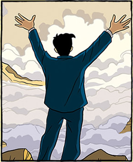

|
Covering a span of sixty years, the graphic novel Logicomix was inspired by the epic story of the quest for the Foundations of Mathematics. This was a heroic intellectual adventure most of whose protagonists paid the price of knowledge with extreme personal suffering and even insanity. The book tells its tale in an engaging way, at the same time complex and accessible. It grounds the philosophical struggles on the undercurrent of personal emotional turmoil, as well as the momentous historical events and ideological battles which gave rise to them. The role of narrator is given to the most eloquent and spirited of the story’s protagonists, the great logician, philosopher and pacifist Bertrand Russell. It is through his eyes that the plights of such great thinkers as Frege, Hilbert, Poincaré, Wittgenstein and Gödel come to life, and through his own passionate involvement in the quest that the various narrative strands come together.
(Notebook, Logicomix) A methodical, step-by-step procedure described in terms of totally unambiguous instructions, which starts at a specified initial condition and eventually terminates with the desired outcome. Though there is no reason why a well-written cooking recipe, or the instructions for finding a certain geographical location or address cannot be called algorithms, the term originated in mathematics, where it is still mostly used. The word “algorithm” comes from a European transcription of the name of the 9th century astronomer and mathematician Al Khwarizmi of Baghdad, who catalogued and championed these methods, having invented many of them. His compendium of algorithms, the Hisab al-jabr w’al-muqabala, is generally considered to be the first algebraic treatise, the very words al-jabr in it also providing the root for our word “algebra”. An example of a simple mathematical algorithm is the method we learn in elementary school for adding two integers: “write the two numbers one under the other with their rightmost digits justified to the right; add their last digits; if the sum is less than 10, write that number right under the other two; if it is greater than 10, write the second digit of the sum right under the other two, and add the first digit to the sum of the digits immediately to the left ...” and so on. Algorithms gained prominence in the West in the 15th century with the introduction of the decimal system, which, in stark contrast with the Roman numerical system, was amenable to fast calculations, such as the one described above. Today, algorithms are usually coded in advanced notations called programming languages. They are often transmitted over the Internet, and constitute the software that is the workhorse, platform, and backbone of computers and the Internet.
(Notebook, Logicomix) Since the time of Euclid, who was working in the wake of Aristotle’s philosophy of logic, mathematicians agree that a workable theory must rest on some (few) agreed-upon first principles that don’t require proof. This is a logical necessity if one wants to avoid, on the one hand, infinite regression (endlessly having to base something on something else) and, on the other, circuitous thinking (constructing proofs for statements which, however indirectly, assume the original statement to be true in the first place). Up to the 19th century, axioms were generally considered to be self-evident truths about the world. After Hilbert, however, and under the influence of the mathematico-philosophical school of formalism, which developed from his ideas, axioms came to be seen as existing independently of any outside reality, the only requirements of an axiomatic system being: for the individual axioms their grammatical correctness (in other words, their being well-formed according to the rules of the logical language in which they are expressed), and independence (their not being derivable from the other axioms of the particular theory); and, for the whole set of axioms, its internal consistency (not containing axioms which contradict one another).
(Bertrand Russell, Autobiography, [Routledge, 2000] p. 387) In 1927, Dora and I came to a decision, for which we were equally responsible, to found a school of our own in order that our children might be educated as we thought best… We wanted an unusual combination: on the one hand, we disliked prudery and religious instruction and a great many restraints on freedom which are taken for granted in conventional schools; on the other hand, we could not agree with most ‘modern’ educationists on thinking scholastic instruction unimportant, or in advocating a complete absence of discipline. We therefore endeavored to collect a group of about twenty children, of roughly the same ages as John and Kate, with a view to keeping these same children throughout their school years… In managing the school we experienced a number of difficulties which we out to have overseen. There was, first, the problem of finance… A second difficulty was that some of the staff, however often and however meticulously our principles were explained to them, could never be brought to act in accordance with them unless one of us was present… A third trouble, and that perhaps the most serious, was that we got an undue proportion of problem children. We ought to have been on the look-out for this pit-fall, but at first we were glad to take almost any child. The parents who were most inclined to try new methods were those who had difficulties with their children… Whatever may have been the cause, many of the children were cruel and destructive. To let the children go free was to establish a reign of terror, in which the strong kept the weak trembling and miserable… Sometimes really sinister impulses came to light…When a pair of rabbits had been given to a child that was unpopular, two other children made an attempt to burn them to death, and in the attempt, made a vast fire which blackened several acres, and, but for a change of wind, might have burnt the house down. For us personally, and for our two children, there were special worries. The other boys naturally thought that our boy was unduly favored, whereas we, in order not to favour him or his sister, had to keep an unnatural distance between them and us except during the holidays.
(Notebook, Logicomix) Since the time of Pythagoras, mathematicians have wondered about the nature of mathematical truth, the ontology of mathematical entities and the reasons for the validity of proof and, more generally, mathematical knowledge. From the Enlightenment until the middle of the 19th century, the prevailing scientific ideology saw mathematics as the only way of reaching a truth that is final, absolute and totally independent of the human mind’s capacity to understand it. The basic notions of mathematics were thought to reflect essential properties of the cosmos and the theorems to be the truths of a higher reality. This absolute faith in mathematics is reflected in the crowning of the discipline as the “Queen of the Sciences”, a title whose previous holder, significantly, was theology. This view is usually termed mathematical Platonism, having its roots in the views of Plato. Yet, in the 19th century this traditional belief was undermined in the minds of some people and eventually led to a serious foundational crisis in mathematics. The first of the discoveries which caused this loss of faith, dating from the time of the Renaissance, was that of the imaginary numbers (i.e. those involving the square root of minus one). But in the 19th century the appearance of non-Euclidean geometries strengthened the arguments against the “self-evident” truth of the axioms. The most troublesome of all mathematical concepts, though, was that of infinity. Problems concerning the mathematical handling of the infinite had first been alluded to by Zeno, in his paradoxes, resurfaced with the invention of the calculus in the 18th century and the counterintuitive and ill-defined concept of an infinitesimal, and peaked in the last two decades of the 19th century, most especially with set theory and Georg Cantor’s results on infinite sets. The problems that came to the surface via set theory ― chief among them Russell’s Paradox ― culminated in severe doubts about “self-evident” truths and thus, indirectly, about the value of all mathematical knowledge. It was principally the wish to overcome these doubts that fuelled the quest for secure foundations.
(Bertrand Russell, How Great Men Are Expected to Feel) …It is difficult to find much in common among different men of genius. Michaelangelo and Beethoven come up to the popular conception, but Newton fails in every way: so far as character and feelings are concerned, he was a typical don, just like thousands who since his day have adorned the High Tables of Oxford and Cambridge. Some men of genius have been passionate, others have been serene; some have been turbulent, others full of prudence and models of correct behaviour. Rare and astonishing abilities are not enough to constitute what is called genius; from this point of view, calculating boys surpass almost all the recognized examples except Mozart. Genius is only allowed to a man whose abilities make some notable difference in the world, by providing new joys or sorrows on a large scale. The most universal characteristic of men of genius would seem to be the capacity to be intensely interested in their own imaginings, and to relate their imaginings to future reality by their achievements. In regard to imagination alone, they are not distinguished from lunatics; it is the power to embody their imagination in the world that distinguishes them.
(Notebook, Logicomix) In 1931, the 25 year-old Kurt Gödel proved two theorems that are sometimes referred to as “the” Incompleteness Theorem ― though occasionally this form is used to denote the first of these. The completeness of a logical system is the property that every well-formed (i.e. grammatically correct by the rules of the system) proposition in it can be proved or disproved from the system’s axioms. Gödel’s earlier Completeness Theorem shows that there is a simple such axiomatic system for first-order logic. However, the holy grail of Hilbert’s Program was to create a complete and consistent axiomatic system that can support arithmetic, i.e. the mathematics of whole numbers. Gödel shocked the mathematical world by proving, in his famous paper “On Undecidable Propositions in the Principia Mathematica and Related Systems”, that any consistent axiomatic system for arithmetic, in the form developed in the Principia, must of necessity be incomplete. More precisely, the first of the two Incompleteness Theorems establishes that in a logical axiomatic system rich enough to describe properties of the whole numbers and ordinary arithmetic operations, there will always be propositions that are grammatically correct by the rules of the system, and moreover true, but cannot be proven within the system. The second Incompleteness Theorem states that if such a system were to prove its own consistency it would be inconsistent.
(Bertrand Russell, Autobiography, p. 149) At the end of the Lent Term, Alys and I went back to Fernhurst, where I set to work to write out the logical destruction of mathematics which afterwards became Principia Mathematica. I thought the work was nearly finished, but in the month of May I had an intellectual set-back almost as severe as the emotional set-back which I had had in February [Evelyn Whitehead’s seemingly near-death experience]. Cantor had a proof that there is no greatest number, and it seemed to me that the number of all the things in the world out to be the greatest possible. Accordingly, I examined his proof with some minuteness, and endeavoured to apply it to the class of all the things there are. This led me to consider those classes which are not members of themselves, and to ask whether the class of such classes is or is not a member of itself. I found that either answer implies its contradictory. At first I supposed that I should be able to overcome the contradiction quite easily, and that probably there was some trivial error in the reasoning. Gradually, however, it became clear that this was not the case.
(Dora Russell, The Tamarisk Tree) Our objection to legal marriage… was not in the main the wish to practise ‘free love’—though we did not rule this out for those who might be so inclined—but to the nature of the marriage law as it then was. It gave rights of property and possession of persons and, by treating infidelity as a crime, encouraged marriage partners to pursue one another with jealousy, suspicion, hatred and revenge masquerading as virtue and righteous indignation… The claim of Bloomsbury to shaping the future lay as much in its views on sex the marriage laws and women’s life in this aspect, as in political power and economics. Poems in vogue were Andrew Marvell’s ‘To His Coy Mistress’, Donne’s Whoever loves, if he do not propose and Blake with his urgent pleas against the caging of love: And priests in black gowns Bertie would often quote Blake, and Bertie’s famous distinction between the ‘possessive’ and ‘creative’ impulses of mankind became the gospel of many of the younger generation. Husbands should not ‘possess’ wives, nor wives husbands, parents should not ‘possess’ their children. Not ‘possessing’ here had a deeper and more psychological meaning than the usual argument about property rights in marriage and the family.
(Notebook, Logicomix) This is the philosophy of mathematics created by the great Dutch mathematician Luitzen Egbertus Jan Brouwer (1881-1966), though some consider Henri Poincaré, with his strong belief in the role of intuition in mathematics, a clear precursor. Intuitionism is based on the belief that intuition and time are fundamental to mathematics, which cannot be made a-temporal nor formal in the sense of Hilbert. Contrary to what logicists like Frege and Russell thought, Brouwer was convinced that logic is founded upon mathematics rather than the other way round. Also, he was totally against the theorems of Georg Cantor in the theory of sets, considering them ill-formed. Time-hallowed logical laws, such as that of the excluded middle, and mathematical techniques in use since the time of the ancient Greeks, such as the reductio ad absurdum, were put on trial and their use condemned. In fact, Brouwer believed that all the theorems making use of these in their proofs ― where infinite sets of mathematical objects were concerned — should be excised from the body of mathematics, a view that made the brilliant British logician and mathematician Frank Ramsey call intuitionism “mathematical Bolshevism”.
(Notebook, Logicomix) The term covers a broad spectrum of disciplines ― not unexpectedly, as it derives from one of the semantically richest Greek words, logos, some of whose meanings are word, speech, thought, reason, ratio, rationality, and/or concept ― but can perhaps be best described as the study of methodical thinking, deduction and demonstration. The books of Aristotle’s Organon present an extensive study of the deductive patterns called syllogisms, which for over two millennia were considered practically synonymous with logical thinking. Until the middle of the 19th century, logic was considered a branch of philosophy. But with the advent of Boole and his algebra of propositions and, more importantly, Frege and his “concept script” which led to a predicate calculus, it increasingly came within the province of mathematics. The new logic revealed both the underlying mathematical nature of the subject and its potential role in the creation of solid foundations of mathematics. The basic claim of the school in the philosophy of mathematics known as logicism ― the school founded by Frege, of which Bertrand Russell was one of the primary exponents ― was that all of mathematics can be reduced to logic or, in other words, that mathematics is essentially a branch of logic. After the years of the foundational quest, however, and especially after Gödel’s results, logic became a well-developed, diversified field in the interface between philosophy and mathematics.
(Bertrand Russell, Greek Exercises) March 9, 1888 I read an article in the Nineteenth Century today about genius and madness. I was much interested by it. Some few of the characteristics mentioned as denoting genius while showing a tendency to madness I believe I can discern in myself. Such are, sexual passion which I have lately had great difficulty in resisting, and a tinge of melancholy which I have often had lately and which makes me anxious to go to this tutor’s as there I shall probably be too much occupied to indulge such thoughts. Also he mentions a desire to commit suicide, which though hitherto very slight, has lately been present more or less with me in particular when up a tree. I should say it is quite possible I may develop more or less peculiarity if I am kept at home much longer. The melancholy in me is I think chiefly caused by the reserve which prompted the writing of this, and which is necessary owing to my opinions.
(Notebook, Logicomix) Written by Aeschylus and first performed in the theatre of Dionysus, in Athens, two years before the poet’s death, in 458 BCE, it is the only extant trilogy of Greek dramas — although the satirical play Proteus, intended to be performed after the trilogy, is missing. In the trilogy’s first play, the Agamemnon, the eponymous hero and leader of the Greek forces in Troy returns a victor to his hometown of Argos, with the captive prophetess, Cassandra. Though his wife, Clytemnestra, at first appears to rejoice at his return, she has other plans. She and her lover, Agamemnon’s cousin Aegisthus, murder Agamemnon and become the new sovereigns of Argos. In the Libation Bearers, the second play, the chorus of women accompanies Agamemnon’s daughter Electra to her father’s tomb. The forlorn Electra is hoping for revenge, which she can only carry out with the help of her brother, Orestes, who is in exile. When Orestes clandestinely returns to Argos, he and Electra plan and execute the murder of Aegisthus and then, in a highly dramatic scene in which Clytemnestra bares her breasts before his naked sword, Orestes also kills her, his own mother. The third play, the Eumenides, or “beneficent ones”, is one of the most unusual in the history of drama: all its speaking parts, apart from that of Orestes himself, are taken up by gods or other supernatural entities. The chorus consists of the Erinyes or Furies, archaic goddesses of revenge, who chase Orestes from the temple at Delphi, where he has been ritually purified by the god Apollo, to Athens. In a totally unprecedented move ― for a god anyway ― Athena, the patron god of Athens, decides to let the citizens of Athens judge Orestes’ case, thus giving a mythological origin-story for the democratic innovation of a court of law, with citizen jury.
(Bertrand Russell, Autobiography, [Routledge, 2000] p. 239) On the morning of August 4th, I walked with Ottoline up and down the empty streets behind the British Museum, where now there are University buildings. We discussed the future in gloomy terms. When we spoke to others of the evils we foresaw, they thought us mad; Yet it turned out that we were twittering optimists compared to the truth. ... The first days of the War were to me utterly amazing. My best friends, such as the Whiteheads, were savagely warlike...I was living at the highest possible emotional tension. Although I did not foresee anything like the full disaster of the War, I foresaw a great deal more than most people did. The prospect filled me with horror, but what filled me with even more horror was the fact that the anticipation of carnage was delightful to something like ninety percent of the population. I had to revise my views on human nature. At that time I was wholly ignorant of psycho-analysis, but I arrived for myself at a view of human passions not unlike that of the psycho-analysts. I arrived at this view in an endeavor to understand popular feelings about the War. I had supposed until that time that it was quite common for parents to love their children, but the War persuaded me that it is a rare exception. I had supposed that most people liked money better than almost anything else, but I discovered that they liked destruction even better.
(Thomas Kuhn, The Road Since Structure) “Revolutionary changes” involve discoveries that cannot be accommodated within the concepts in use before they were made. In order to make or to assimilate such a discovery one must alter the way one thinks about and describes some range of natural phenomena. The discovery (in cases like these «invention» may be a better word) of Newton’s second law of motion is of this sort. The concepts of force and mass deployed in that law differed from those in use before the law was introduced, and the law itself was essential to their definition. A second fuller, but more simplistic example is provided by the transition from Ptolomaic to Copernican astronomy. Before it occurred, the sun and moon were planets, the earth was not. After it, the earth was a planet, like Mars and Jupiter; the sun was a star; and the moon was a new sort of body, a satellite. Changes of that sort were not simply corrections of individual mistakes embedded in the Ptolemaic system. Like the transition to Newton’s laws of motion, they involved not only changes in laws of nature but also changes in the criteria by which some terms in those laws attached to nature. These criteria, furthermore, were in part dependent upon the theory with which they were introduced.
(Notebook, Logicomix) The great British mathematician Alan Turing is generally considered to be the father of computer science. Turing contributed to many areas of mathematics, but is mostly remembered for one of his earliest results in logic. His ingenious definition of an algorithm in terms of a theoretical “machine” with a central control and a tape for memory, input and output, anticipated in important ways the digital computer and has had, since then, an enormous influence on computational practice and thought. Turing machines ― as they are now called — share with today’s computers the key property of universality, in that a machine can carry out any computational task, provided it is supplied with an appropriate program for it. The work of Turing ― as well as that of the others mentioned — on algorithms and methods for the general solvability of problems, is an obvious outgrowth of the foundational quest and thus, in a sense, its culmination. During World War II, Turing presided over the design and construction of two series of electronic computers, the “Bombe” and the “Colossus”. These were used successfully ― and crucially for the war effort ― for breaking several German cryptographic codes, including the notoriously hard “Enigma” of the German navy. After the war, Turing worked in the fledgling British computer industry, did important work in biology and founded the field of artificial intelligence by proposing what became known as the Turing test, a method for determining whether an artifact “can think”. In 1952 he was prosecuted on account of his homosexuality, then a punishable offense in Britain. As an alternative to a jail sentence, he agreed to undergo an experimental “treatment” with estrogens, which probably caused the severe depression which led him to take his own life, in 1954.
(Notebook, Logicomix) Often used synonymously with predicate logic and first-order logic, the predicate calculus is Frege’s extension of the propositional logic developed by Boole. In the predicate calculus, elementary propositions (or predicates) are composite objects of the form P(a, b, c,…), where P is a symbol in the language, and a, b, c, etc. are constants or variables. For example, if “older” is a propositional symbol, “Plato” is a constant and “x” is a variable, then “older(Plato, x)” is a well-formed proposition, describing that Plato is older than x. Propositions of this type can then be combined by Boole’s connectives “and”, “or”, “not” and “implies” and prefixed by Frege’s quantifiers, such as “for all x” (written ) and “there exists y” (written ). Thus, “there exists x older(x, Plato)” means that there is (at least) one individual who is older than Plato. Evidently, this is a much more ambitious attempt at creating Leibniz’s calculus ratiocinator than Boole’s simpler formal logic. By employing symbols from various fields of mathematics (such as “<”, “+”, and so on) one can create predicates expressing mathematical statements in this formal, logically exact language. For example, the theorem in arithmetic stating that every integer is either odd or even can be written thus: x y (x=y+y or x=y+y+1) Whether a sentence in the predicate calculus, first- or second-order, is true or false depends on the model whereby the sentence is interpreted. Thus, for example, the simple arithmetical theorem given above is true of the whole numbers in the ordinary interpretation of “+”, but becomes false if we interpret the symbol “+” as multiplication. However, some sentences ― called valid ― are true independently of interpretation, because they embody basic properties of Boolean connectives and quantifiers. Kurt Gödel’s Completeness Theorem provides a simple, complete axiomatic system for proving validity in first-order logic.
(Notebook, Logicomix) The extremely influential, but highly controversial, essentially unfinished work in which Alfred North Whitehead and Bertrand Russell attempted to rescue Frege’s grand project to create foundations of mathematics built on logic, in the wake of the crisis brought on by Russell’s Paradox. The title Principia Mathematica (i.e. “Principles of Mathematics”) in itself provoked controversy, as it is the exact same as that of Newton’s greatest work; many in the British mathematical community thought this choice to be in bad taste, if not actually blasphemous. The three volumes of the Principia, published in 1910, 1912 and 1913, were based on a developed version of Russell’s theory of types, the so-called “ramified”, which imposed a hierarchical structure on the objects of set theory. This could not be made to yield the required results, however, without the addition of what Russell called an axiom of reducibility, which eventually became one of the main reasons for negative criticism of the whole work. Logicians found this axiom extremely counter-intuitive, a far-fetched and basically artificial method to sweep the very problem it was trying to solve under the rug. Despite the fact that the Principia fell short of its authors’ immense ambition, it had a huge influence on the shaping of modern logic, its greatest effect possibly being the inspiration and context it provided Kurt Gödel for his groundbreaking discovery, the Incompleteness Theorem.
(Notebook, Logicomix) The process of arriving at the logical verification of a mathematical or logical statement, starting from a set of agreed-upon first principles (these could be either axioms or already proven statements, deriving from these axioms), and proceeding by totally unambiguous and unabridged logical steps or rules of inference. The demonstrations of geometric propositions in Euclid’s Elements were considered for over two millennia to set the standard of excellence to which mathematical proof should aspire. Yet, towards the end of the 19th century his method came under logical and philosophical scrutiny and was found to lack, principally, in two directions: a) in its sense of the logical “obviousness” of the axioms, and b) in its logical gaps, where intuition ― which, in Euclid’s case was mostly visual-geometric ― took over from strict application of a formal system of rules. In a sense, Frege’s and Russell and Whitehead’s logicist project was developed as a reaction to the imperfections found in Euclid’s proofs, as well as all those developed in his wake. The logicists, as well as the formalists working on the foundations of mathematics, aimed at a fully developed theory and practice of rigorous proof, by which arithmetic (as the basis of all mathematics) would begin from a small number of consistent axioms, and eventually lead, via proof, to the full range of truth.
(Notebook, Logicomix) Discovered in 1901, as Russell was working on his first book on the foundations of mathematics, the Principles of Mathematics (published in 1903), the Paradox, in the form originally expressed, shows an essential flaw in Cantor’s set theory, developed from Bolzano’s simple concept of a “collection of elements with a common property”. By the generality of this definition, which Frege extended to the realm of logic, one can speak of a “sets of sets” and thus, eventually of the “set of all sets”. Of the elements of this all-encompassing set one defines the property of “self-inclusiveness”, i.e. of a set containing itself as an element. Thus, for example, the set of all sets is a set (and thus contained in itself), as is the set of all entries in a list (it can appear as an entry in a list), but the set of all numbers is not a number and thus not contained in itself. By virtue of this property, we can define the “set of all sets which don’t contain themselves”, and ask, with the young Russell, the question: “Does this set contain itself or not?” See what happens: if it does contain itself, it follows that it is one of the sets which don’t contain themselves (as this is the property that characterizes elements of this set) and thus cannot contain itself. But if it doesn’t contain itself, then it does not have the property of not containing itself, and thus does contain itself. This situation, in which assuming something implies its negation, and vice versa, is called a paradox. When a paradox, such as Russell’s, arises in a theory, it is a sign that one of its basic premises, definitions or axioms is faulty.
(Notebook, Logicomix) Literally, the quality of a statement of referring to itself. However, it is also used more generally in logic to characterize statements which include themselves within their scope of reference, as in the “barber” story used to explain Russell’s Paradox. The barber lives in a town wherein a law decrees that “all residents of the town must either shave themselves or be shaved by the barber.” This law is self-referential as the barber, apart from being “the barber” referred to, is also one of the “residents of the town”. Self-reference has played a seminal role in logic and mathematics, already from the time of the Greeks. From Euboulides’ self-referential statements to Gödel. In fact, Gödel proved his Incompleteness Theorem by creating, in the context of modern logic, a statement that is quite similar in spirit to that of Euboulides, with one crucial difference: while Euboulides states “this statement is false”, Gödel’s ingenious variant essentially says, in the language of arithmetic, “this statement is unprovable.” Any consistent axiomatic theory in which one can formulate such a statement must be necessarily incomplete: for either this statement is false, in which case it is both false and provable, contradicting the consistency of the axiomatic system, or true, in which case it is both true and unprovable, establishing its incompleteness.
(Notebook, Logicomix) The study of collections of objects united by a common property ― in some cases this property can be nothing more than the fact that they are defined to be members of the same set, as for example in the arbitrarily defined set whose elements are the numbers 2, 3, 8, 134, 579. Sets were first studied by the Czech mathematician Bernard Bolzano (1781-1848), who also introduced the term Menge (‘set’) and defined the notion of a set’s cardinality, i.e. of its “size” in a way not directly involving measurement. The advanced mathematical discipline of set theory was arguably born on December 7, 1873, when Georg Cantor wrote to his teacher, Richard Dedekind describing his proof of the non-denumerability of the real numbers (the set of the whole numbers, decimals, zero and the negative numbers), as opposed to the denumerability of the rationals (all fractions), which Cantor also proved ― denumerability is defined as a one-to-one correspondence with the natural numbers 1, 2, 3… etc. The concept of a set is almost too primitive to merit a mathematical definition, and is practically impossible to define informally without the use of some synonym (here we used the word “collection”). It is precisely this “naturalness” of the concept in Bolzano’s and Cantor’s work that led to Russell’s Paradox. To overcome it, and to rule out the flawed concept of “the set of all sets” it allowed for, one has to come up with bottom-up constructions and axioms for sets, as in the Principia Mathematica and, later, the system called “ZFC”, from the names of its two creators, Ernst Zermelo and Abraham Fraenkel, and the Axiom of Choice, a necessary additional axiom that allows the theory to deal with infinite sets. Set theory is considered by some the most basic branch of mathematics, as all others can be defined in terms of it. This was the gist of an over-ambitious project undertaken, from the 1930s onwards, by the group of brilliant French mathematicians writing under the pen name of “Nicolas Bourbaki”.
(Notebook, Logicomix) Ludwig Wittgenstein wrote his seminal philosophical work during WWI, building on his pre-war notebooks and ideas on logic. It contains his solution of (in his own words) “all the problems of philosophy”, dealing with the world, representation, and language. Originally called Logische-Philosophische Abhandlung (“Logical-Philosophical Treatise”), it was renamed for its English publication under the influence of G. E. Moore, with his predilection for Latin titles. In the Tractatus, Wittgenstein uses many techniques and ideas from logic, especially those of Frege and Russell, as well as insights from totally different philosophical positions, mostly that of Arthur Schopenhauer. Though publication by the then totally unknown Wittgenstein was only made possible when Russell accepted to write an introduction, calling the book “an important event in the philosophical world”, the Tractatus was the cause of the two men’s falling-out. Wittgenstein considered Russell’s ― not altogether appreciative ― introduction to his work to be fraught with misunderstandings and philosophical errors, while Russell saw in the Tractatus the first signs of Wittgenstein’s decline ― as he saw it ― into mysticism. The tight structure of the book proceeds with seven main propositions, each developed in a chapter, which are further developed in propositions arranged by a rather pedantic, and often somewhat confusing, system of numbering. The first two propositions (1 and 2) expand the positions that “the world is all that is the case”, and that “what is the case” are facts, and combinations of facts. The book’s final clause, proposition 7, is: “What we cannot speak of, we must pass over in silence.” (This and other quotes are from the D.F. Pears and B.F. McGuinness translation.) This last proposition was given two highly divergent interpretations, the extreme positivist one of the Vienna Circle, by which what one “cannot speak of” (logically) is, quite literally, non-sense, and the one that Wittgenstein and others himself later gave, which Russell termed “mystical”, according to which what “one cannot speak of” is the truly important. The Tractatus is one of the most influential and closely-studied books in Western philosophy. Its influences are legion and it may have also influenced ― and certainly was vindicated by ― the way in which computers and databases model the world today.
(Notebook, Logicomix) A group of philosophers and philosophically-minded scientists, who met in Vienna between 1924 and 1936. Their main aim was two-fold: to build a strong empiricist philosophy using the insights into scientific methodology garnered from recent advances in logic, mathematics and physics, and to apply the methodology of the physical sciences to the social. The scientifically-trained philosopher of science Moritz Schlick is generally recognized to be the group’s leader. Some of the most prominent members were: the mathematicians Hans Hahn, Olga Hahn-Neurath, Gustav Bergmann, Karl Menger, and Kurt Gödel for a short period of time; the physicist Philipp Frank; the social scientist Otto Neurath and the philosophers Viktor Kraft and Rudolf Carnap. The group met informally Thursday evenings at Vienna’s “Café Central”, but was later constituted as a society with public meetings. Despite the group’s informal nature, the members had a common core of philosophical beliefs, expressed in a sort of manifesto, titled “The Scientific Conception of the World”. The members of the Circle declared that the work of Frege, Russell and Einstein provided their first inspiration, while the Tractatus Logico-Philosophicus of Ludwig Wittgenstein functioned as their direct model. The philosophies of logical positivism and logical empiricism, expressing the worldview of the members of the Circle, state that knowledge comes from experience ― and thus, basically, from scientific observation and experiment ― developed into theory through logical analysis and synthesis. Still, following the Tractatus, members of the Vienna Circle held that logic and mathematics only deal in tautologies, and thus do not provide knowledge as such, but only one of the tools for the elaboration of empirical knowledge. Though the Vienna Circle, in its original form, was dissolved in 1936, after Schlick’s murder by a paranoid ex-student and Nazi sympathizer, its spirit continued to live on. Most of its members managed to flee Austria and emigrate to England and the United States, where they had a major influence on the development of post-war philosophy.
(Bertrand Russell, Autobiography, [Routledge, 2000] p. 261) The War of 1914-1918 changed everything for me. I ceased to be academic and took to writing a new kind of books. I changed my whole conception of human nature. I became for the first time deeply convinced that Puritanism does not make for human happiness. Through the spectacle of death I acquired a new love for what is living. I became convinced that most human beings are possessed by a profound unhappiness venting itself in destructive rages, and that only through the diffusion of instinctive joy can a good world be brought into being. I saw that reformers and reactionaries alike in our present world have become distorted by cruelties. I grew suspicious of all purposes demanding stern discipline. Being in opposition to the whole purpose of the community, and finding all the everyday virtues used as means for the slaughter of Germans, I experienced great difficulty in not becoming a complete Antinomian. But I was saved from this by the profound compassion which I felt for the sorrows of the world.
(Bertrand Russell, letter to a former lover, May 1, 1939) War. I have been thinking day and night about the whole thing. At moments I think one must fight Hitler, but deep down I still believe that war would be worse than Hitler. At the same time, I feel as you do that one couldn’t refuse to help civilians. The last war was decided by man power, and one couldn’t, as a pacifist, do anything that enabled them to send to the trenches some one else who would otherwise have been kept at home. This war will not be decided by man power, and home will be as dangerous as the trenches. I have written to John (who is 17 ½) advising him, if conscripted, to accept alternative service of a kind to save life—A[ir] R[aid] P[recautions], ambulance, hospital work, etc.—but not munition making or anything of that kind. I think the same applies to you, except that, until war comes, you may have better things than A.R.P. to do with your time. The government will, no doubt, in the end conscript women for various kinds of civilian work. I don’t think, in your place, I should rush in before the government grows insistent; doing so tends to make war more probable, and in any case the government is likely to demand at least as much as one ought to concede. But this is a difficult question, which might be altered at any moment by a change in the political situation... The University of California in Los Angeles has offered me a 3-year professorship, which for financial reasons I have had to accept. I don’t like exile, but the England I loved is moribund, and America is better for the young. If I can get John and Kate over, I shall be glad to be distant from bombs. But absence from people and places that are important to one is painful.
|
 Buy it Online
| Share:
Buy it Online
| Share: